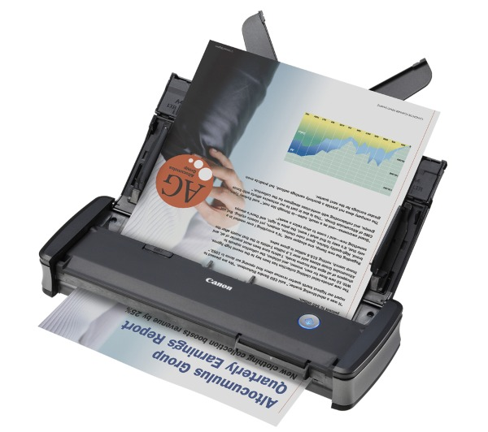
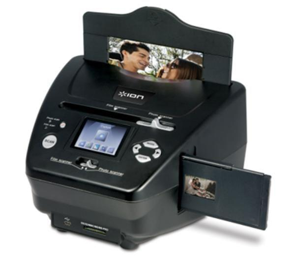
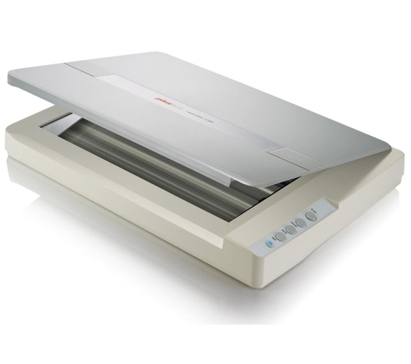
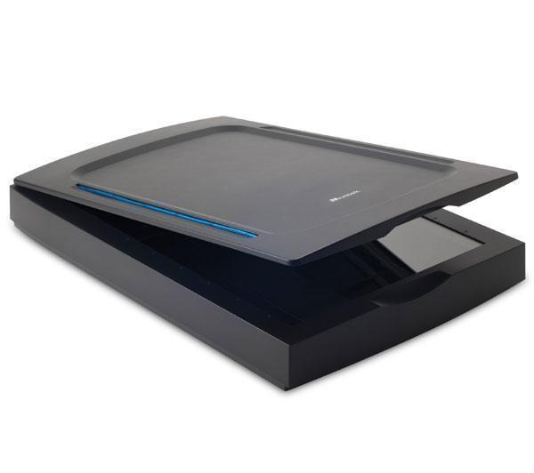

e diapositive")
| Nome Oggetto | Foto | Quantità | Prezzo | Link |
|---|---|---|---|---|
| CANON P-215II - Scanner Portatile |  | 12 | Euro 239,00 | Metti nel Carrello |
| ION Scanner Pics 2SD |  | 5 | Euro 140,00 | Metti nel Carrello |
| REFLECTA x8-Scan - Scanner per pellicole (35 mm) e diapositive | |
3 | Euro 290,00 | Metti nel Carrello |
| PLUSTEK OpticSlim 1180 - Scanner piano A3 |  | 1 | Euro 410,00 | Metti nel Carrello |
| MUST Scanner ScanExpress A4 USB 2400 Pro |  | 4 | Euro 200,00 | Metti nel Carrello |